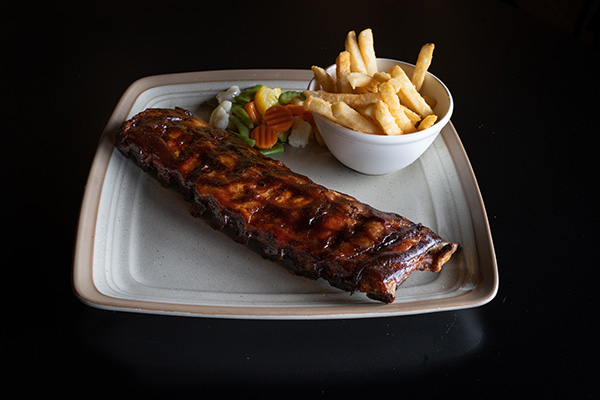
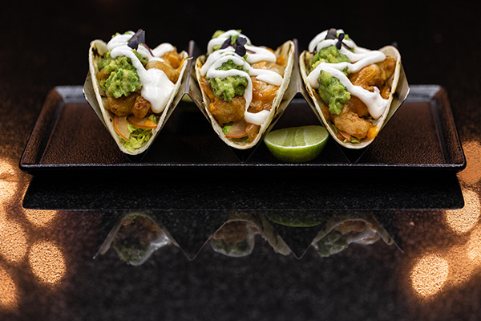
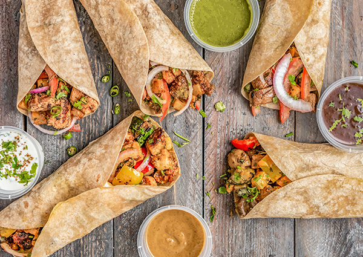
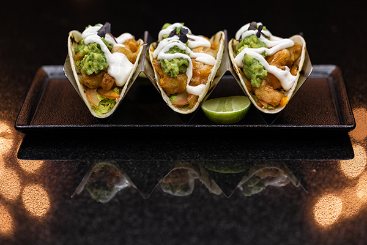
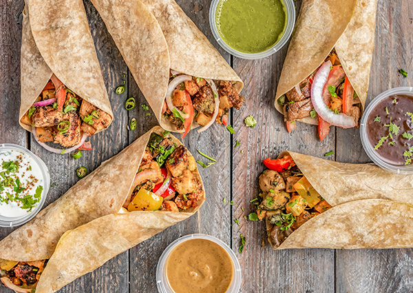

Bone's er stedet for jer, som er vilde med saftige spareribs, møre steaks, lækre burgere med sprøde fries og softice til dessert.
Besøg website
Bliv ført tilbage i tiden, hvor store burgere og hjemmelavede milkshakes var standard på en diner.
Besøg website
Tacos Locos byder på lækker mexicansk mad med et udvalg af burritos, tacos og mexicanske specialiteter.
Besøg website 



Er du til byens bedste brunch, en hyggelig frokost aftale eller skal sulten stilles med et ordentligt aftensmåltid, så er Café Vivaldi altid et godt valg.
Besøg website